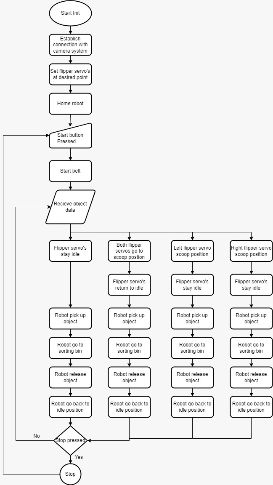
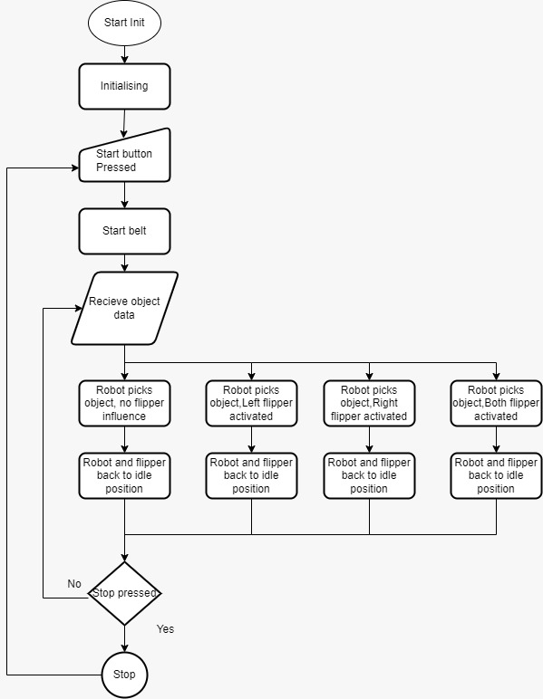
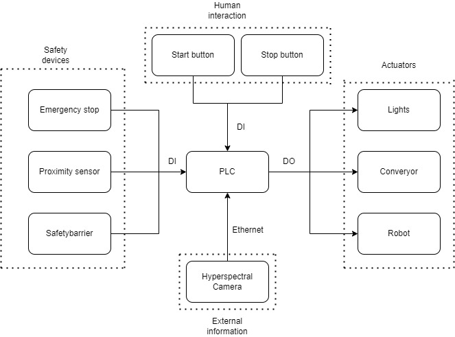

Information
Project Overview: This project focuses on developing an automated system for sorting scrap metal using vision technology and robotics. The system integrates a vision-based detection mechanism, a conveyor belt, and a robotic arm to classify and sort various types of metals for recycling purposes.
Key Deliverables:
- Conveyor System: To move materials true out the system.
- Vision System: Cameras for real-time object detection.
- Robotic Arm: A 2-axis arm that interacts with materials based on vision system data.
- Flipper: To puch material of conveyor system.
- Documentation: Choices and why these have been made.
Group Information
| Team Member | Roles | |
|---|---|---|
| Jesse de Klein | 516392@student.saxion.nl | General Member |
| Vincent Molenkamp | 519540@student.saxion.nl | General Member |
| Daan Scholten | 537519@student.saxion.nl | General Member |
| Milan Oude Nijeweme | 517922@student.saxion.nl | Group Manager |
| Oriol Valles Garcia | 571634@student.saxion.nl | General Member |
| Lars Schumacher | 505340@student.saxion.nl | General Member |
Work Distribution
To ensure an equitable distribution of work, we have chosen to divide the chapters of the mdBook equally among all team members. This approach ensures that everyone has a meaningful contribution to the project and takes responsibility for a specific section. By sharing the workload in this way, we promote collaboration, fairness, and a balanced effort from the entire team, ultimately enhancing the quality of the final product.
| Team Member | Assigned chapters |
|---|---|
| Jesse de Klein | Chapters 2, 2.1 |
| Vincent Molenkamp | Chapters 1, 1.1, 1.2, 1.3 |
| Daan Scholten | Chapters 2.2, 4.2 |
| Milan Oude Nijeweme | Chapters 3.2, 3.3 |
| Oriol Valles Garcia | Chapters 3, 3.1 |
| Lars Schumacher | Chapters 4, 4.1 |
Project Discription
Project Purpose: The project aims to automate the process of metal sorting for recycling using a vision-based detection system integrated with a robotic arm for pick-and-place tasks.
See the figure below for the system

Image_1: (The System)
See the figure below for the materials that need to be sorted

Image_2: (The Materials)
Objectives:
- Automate the sorting process for different types of metals.
- Increase sorting accuracy to nearly 100%.
- Improve safety by minimizing human interaction and ensuring system safeguards are in place.
- Technologies:
- Vision System for object detection.
- AI for metal recognition.
- Conveyor belt for material transfer.
- Robotic arm for picking and placing materials into designated bins.
- Flipper to move materials of conveyor.
Project Planning
PlantUML rendering error: Failed to generate diagram (error sending request for url (http://localhost:8181/svg/TP3B2i9034NtXVv3Vg3GbuApwi9DTqNSYOlGXhOwpPIPgB_lMBNWWDjmRavoAoTefKSMYQF6cWkr0ilCGPxcPPBkaZIBerCpe2F851p84Tfs0EGE6etC8_TdqEXyf8G7qTMjVAvWJtVIPfw8vKjj0wfGK4-pfXU3CXh-1vOAZkJ42nTxBMH_-2BWDrvlsjkwztspzHy4ecm9nb55t7tAU08=): error trying to connect: tcp connect error: No se puede establecer una conexión ya que el equipo de destino denegó expresamente dicha conexión. (os error 10061))
PlantUML rendering error: Failed to generate diagram (error sending request for url (http://localhost:8181/svg/NP6zRiCW58Lt9DxXAbCxHBAZ_gWPgWp84flb8dL6xbL3Wh5bI8OyVIuGsOv7xla-uC311ps6IsSv2oPOX7hiJzW6KAP3Qnp2oww0NyIpV-MCiu5eqvf1km2R1ZtgiJr2VTGUDw0zDFMA4NX5smyTqcB6n1gJtM0nGZgOtYr8kIOL-c3S_m9HQwGoJbiGVNkPTanW9MA5feRjDrrqdsj12LjuosEQ2vh_n3U1nSqv4qaIa_HEKbdaEGLoifwBS2QJAEVJud7bHmueKPFvACQPIegQbS-eVEM0aahi8LKqDtnkoLabu4545tP5R7n0zvU--0u=): error trying to connect: tcp connect error: No se puede establecer una conexión ya que el equipo de destino denegó expresamente dicha conexión. (os error 10061))
Automation System Blueprint
This process diagram illustrates the automation setup for detecting, identifying, and sorting various types of metal on a conveyor belt. The system comprises a camera with AI capabilities and a Cartesian Robot that work together to categorize and sort metal objects.
-
Detection and Identification: As metals move along the conveyor belt, a camera detects each object and, using AI, determines its type and location on the belt.
-
Sorting and Placement: If a metal type is successfully identified, the information is sent to the Cartesian Robot, which moves to the specified position, picks up the object, and places it in the appropriate bin. If the metal type is unknown or not recognized, the object remains on the conveyor and is ultimately directed to an "unknown" bin.
-
Continuous Operation: After each object is processed, the system resets to handle the next item on the conveyor, ensuring a continuous sorting workflow.
This diagram provides a high-level overview of the key components and steps in this automated sorting process.
PlantUML rendering error: Failed to generate diagram (error sending request for url (http://localhost:8181/svg/RPB1JiCm38RlbVeErWveE_02wu6XJK8x3ARjn35DtIsGnbMI3LM8TyT9K-WeLQLAQVxFltzxvRom_jBeFFFAQuIz9OdEmKQ9anKDtCCElT2mGO_IAp8WJ0L7ibwPKvxbMGJasV8Olj3sye8Feiu1AoIPAtPaeKJjYo1g-QwAjDbQD6W5tC7ZTWQVUGRyBFjgq0H4aSws5Hglwgu_1T-rM8oksqOP14rIH2w_gTfNAAXgc6_TI0fLB87LmmBy6GtCNz4j4k-8tECFAZGS9PvWpSRHAM7WG2K5F6g7C7-cGVjIlaNhT4KN51VpRkY3tIYJx3fFBUjCfUf95ZVqtpmEA55TSUffI637vKArli6MN2GEVv-iA6_2J758iZQOPMzGytm2yPyy8cElXSJ4LsOiJSm_GOn4V7sQGke_JcSvR9safjKycAgtSrQyFp7F8YnQY2tFLgoC2_iD): error trying to connect: tcp connect error: No se puede establecer una conexión ya que el equipo de destino denegó expresamente dicha conexión. (os error 10061))
Analysis & Design
This component diagram shows the key elements of the Metal Detection and Sorting System and their interactions.
-
Metal Detection System: The Conveyor Belt moves metal objects to the Camera & AI for detection and classification.
-
Control System: The AI Processing Unit analyzes the metal type, and the Control Unit directs the Cartesian Robot to sort the object.
-
Sorting System: The Cartesian Robot places the metal in the correct bin or in the Unknown Bin if the type is unrecognized.
This diagram provides a structural overview of the system and how each component works together to automate the sorting process.
PlantUML rendering error: Failed to generate diagram (error sending request for url (http://localhost:8181/svg/RP7Dgi8m48NtWRp3uEBk-WeN_pOkBbmKLzB5M8SIJ6Oa6HKHtztMDcZLB0_VEMSoOyquAKOz1c-DElK4Cma7OMA5kSCwOe02_aZHmvoKAdN2WBo3bKHrNCFgafI2DTOSiDfZJJ1wnpja15The7cRcV29BX9XIbvBA8hVHiD04U479eioOozI1qqMy1-befJQvZKxRTZReBl9rYZ-e_EBjI_k3NrQ7l2fvVcYKdB8i9IjVFOEr_7orpTVbvRfgUEKeuPYnwrvptBcLYfRPaoyUzpAcZi=): error trying to connect: tcp connect error: No se puede establecer una conexión ya que el equipo de destino denegó expresamente dicha conexión. (os error 10061))
Procces, FlowControl & Diagrams
-
Detection with line scan camera: The line camera continuously scans the metals on the moving conveyor belt, capturing one line of an image at a time. All these line photo's whill be put together to create an image.
-
AI recognition: The AI analyzes these images to identify the type of metal for example copper or aluminum. The right type of metal whill be chosen by comparing the images to a data base with all the metals.
-
Location calculation and robot arm control: The system calculates the metal’s current position based on the time elapsed and speed of the conveyer belt. The robot arm uses this calculation to pick up the object at the correct moment. The robot does this by using 3 axis one that moves above the conveyer belt in the y direction, the other ones is for the z direction to pick the metal from the belt and the last one is to rotate the gripper.
-
Sorting: The robot arm moves each piece of metal to the appropriate location, such as a bin or container for that specific metal type.
Shown below is a diagram of how the system is used
PlantUML rendering error: Failed to generate diagram (error sending request for url (http://localhost:8181/svg/LPFTJiCm38NlA_KTV0aIy018GvJiPjAGgY8Um4lD23HDbQOWtXuxYxljhhAFJpx_z7bE6DFYXxf2cqA4zvcYVfim_j1VY2yq9C0Pp8jczcuaWvuYIdnlDDxiEhBXEBhamYYfPgUfLqeuR37X0MUIr7PrQyES2mmETXbGGfnlLzSk749gefTerzHLNMqsy2RWAo9anischgG1k7zYM7Wi8gkY0ujAUSQ1BIMocLLAkOGBzuOBNyCFWS-QSFXYpGmiKgEwOf5AJnudyGmuzc1nIaiaS1wFfDfc9pp4wHo652JqmLJnFB82nuaJt-KqXP0JRBMLrapm4-eZyElIP-7jouphYdNt-d97Z3GMIVgR26xeuVXmnpxJHF4Ecc7nRbpyRM7O1ulvNTtADKDhj9qBIsc-NqUQd6U8rgpRO8ReY0UxBcIUY7hLT8sqLLuZcCfLGFWulL70yZM0d4DpNXtNgaDU7K_NgbE_MbtfMcU_OPdK-p8peDNjE-xZKuXZb2qpUK8-VZw1Psu-pZ): error trying to connect: tcp connect error: No se puede establecer una conexión ya que el equipo de destino denegó expresamente dicha conexión. (os error 10061))
See the figure below for the flowchart 
Image_3: (Image of Flowchart)
See the figure below for the simplefied flowchart 
Image_3: (Image of Simplefied Flowchart)
Error Handeling
- Possible faults or errors:
| Error identified |
|---|
| a. Power failure |
| b. Failed to establish connection to camera system |
| c. Failed to home robot |
| d. Robot not or eratically moving |
| e. Robot not in Expected position |
| f. Flippers non functional |
-
How to handle error:
a. Power failure
Fault Trigger:
When the system experiences a sudden loss of power. Possible causes: Power supply failure, loose cables, or an external power outage.
Recovery/Reset:
Restore power to the system and verify stable voltage levels. Ensure all connections are secure. Restart the system, ensuring a controlled initialization process. Check for any data corruption or system errors caused by the abrupt shutdown.
b. Failed to establish connection to camera system
Fault Trigger:
When the system cannot detect or connect to the camera during initialization or operation. Possible causes: Network issue, incorrect IP configuration, hardware failure.
Recovery/Reset:
Check camera power and physical connections. Ensure the IP configuration matches (e.g., static IP or DHCP setup). Restart the camera and the system. Verify the camera is accessible via diagnostics tools (e.g., vendor software for Allied Vision Manta). If persistent, reset to factory settings or reconfigure the camera
c. Failed to home robot
Fault Trigger:
When the robot fails to reach the home position during a homing sequence. Possible causes: Obstructions, sensor misalignment, motor/encoder issues, or software configuration errors.
Recovery/Reset:
Inspect for physical obstructions or interference. Check sensor alignment and functionality. Reset the homing parameters and retry the homing process. Verify motor function and encoder feedback. If unresolved, restart the system and recalibrate.
d. Robot not or eratically moving
Fault Trigger:
When the robot's movements are unresponsive, jerky, or inconsistent with commands. Possible causes: Motor issues, stepper driver problems, mechanical faults, or software glitches.
Recovery/Reset:
Inspect mechanical components for wear, obstructions, or misalignment. Verify motor wiring and driver settings. Check the belt drives Check software for proper command sequencing and ensure no conflicts. Restart the system and reinitialize the motion control system.
e. Robot not in Expected position
Fault Trigger:
When the robot deviates from the expected position during operation. Possible causes: Missed steps or external interference.
Recovery/Reset:
Perform a homing sequence to reestablish the robot's reference position. Inspect for mechanical backlash or slippage. Analyze logs for command discrepancies.
f. Flippers non functional
Fault Trigger:
When the flipper mechanism fails to respond or perform its intended action. Possible causes: Mechanical jam, motor/servo failure, or communication issue.
Recovery/Reset:
Inspect the flipper mechanism for jams or blockages. Test the motor/servo functionality and replace if defective. Check the communication link (e.g., wiring, protocols) to ensure proper control signals. Restart and test the flipper system in isolation.
Safety Considerations
-
Physical Safety for Operators:
- Enclosures & Barriers: Protect areas around the robot and conveyor.
- Emergency Stops: Accessible buttons for immediate shutdown.
-
System Safety Features:
- Collision Sensors: Detect and prevent robotic collisions.
- Overload Protection: Prevents handling weights above capacity.
-
Electrical Safety:
- Grounding & Insulation: Reduces risk of electric shock.
- Surge Protection: Safeguards against electrical fluctuations.
-
Monitoring & Alerts:
- Real-Time Monitoring: Detects abnormalities early.
- Automated Alerts: Notifies of temperature or sensor issues.
-
Maintenance & Training:
- Routine Checks: Ensure all components work safely.
- Operator Training: Covers operation and emergency protocols.
-
Environmental Control:
- Dust Control & Ventilation: Keeps sensors clear and stable.
- Temperature Regulation: Prevents overheating for reliable performance.
Risk analysis
1.Technical Risks:
- Severity: High – A component failure can lead to a complete system halt, loss of production, and potential safety hazards if a critical failure occurs while the system is operating.
- Likelihood: Moderate – While most industrial components are robust, wear and tear over time or manufacturing defects can cause failures.
- Potential Harm: Moderate – A component failure could harm personnel indirectly (e.g., from unexpected movements, robotic arms mispositioning) or lead to system downtime, requiring manual intervention.
1.1.Mitigation:
- Regular Maintenance: Scheduled maintenance based on usage time and manufacturer recommendations.
- Redundancy: Install backup components for critical systems (e.g., a secondary PLC or power supply).
- Real-Time Monitoring: Continuous monitoring of component performance, including temperature, vibration, and power usage, to predict failures before they occur.
- Emergency Stop: Immediate system shutdown if critical failures are detected, triggering alarms and stopping all operations to prevent harm.
2.Sorting Accuracy Risks:
- Severity: Moderate – Inaccurate sorting can cause production inefficiencies, delays, and incorrect product sorting.
- Likelihood: Moderate – Variability in material properties could affect sensor accuracy and the AI's ability to correctly classify materials.
- Potential Harm: Low – This is more of an operational risk than a safety risk but could lead to product loss or rework.
2.1.Mitigation:
- High-Resolution Sensors: Use sensors capable of distinguishing materials with very similar properties (e.g., spectroscopic or inductive sensors).
- AI Algorithm Enhancements: Improve AI accuracy by training it on a diverse set of materials, including edge cases and outliers.
- Calibration: Periodic sensor calibration (e.g., monthly) to ensure accurate readings.
- Redundant Sensors: Install multiple sensors for cross-checking results, especially in critical sorting operations.
3.Integration Risks:
- Severity: High – Misalignment or desynchronization between the conveyor and robot can lead to misplacements of objects, machine damage, or accidents.
- Likelihood: Moderate – Integration failures can occur due to unexpected load changes, communication errors, or speed mismatches.
- Potential Harm: Moderate – Misplacements could lead to damage to the robot, products, or even personnel if the system doesn’t stop in time.
-Unexpected Robotic Movements: If the robot misplaces or drops objects due to synchronization failures, those objects could strike a person nearby, leading to potential injuries. -Collision Risk: A desynchronized robotic machine might collide with other machinery, fixtures, or even personnel in its working area, resulting in direct physical harm. -Manual Intervention: During integration failures, operators may be required to intervene manually, placing them in proximity to moving parts and increasing the likelihood of injuries, such as pinching, crushing, or being struck by sudden movements.
3.1.Mitigation:
- Precise Control Algorithms: Implement PID or other advanced control algorithms to maintain synchronization between the conveyor and robot.
- Real-Time Feedback Loops: Integrate real-time feedback from sensors and encoders to automatically adjust and correct synchronization.
- Simulation Testing: Conduct thorough testing and simulations before full-scale deployment, using different load conditions and potential errors.
- Emergency Stop: If synchronization fails, trigger an emergency stop, allowing the system to halt all moving parts immediately.
4.Environmental Risks:
- Severity: High – Dust, dirt, or temperature fluctuations can severely degrade the performance and longevity of sensitive components like sensors, actuators, and PLCs.
- Likelihood: High – Industrial environments typically have fluctuating temperatures and dust accumulation, which are difficult to control.
- Potential Harm: Low to Moderate – Dust or dirt could indirectly harm workers by affecting system safety or indirectly causing malfunctions, but direct physical harm is unlikely.
4.1.Mitigation:
- Sealing and Enclosures: Use IP65-rated enclosures and protective covers to safeguard sensitive components from dust and dirt.
- Environmental Control: Maintain temperature-controlled environments using HVAC systems to avoid extreme fluctuations.
- Scheduled Cleaning: Regular cleaning of equipment and workspace to remove accumulated dust.
- Air Filtration: Use industrial-grade HEPA filters in the work area to minimize airborne particulates.
5.Software Risks:
- Severity: High – A programming error can cause unplanned system movements or malfunctions, resulting in potential injuries or damage.
- Likelihood: Low to Moderate – Software errors can occur during the development or updating phases but can be minimized with proper testing.
- Potential Harm: High – Malfunctions, such as unexpected robotic movements or incorrect actions, can directly harm personnel, especially near moving parts.
5.1.Mitigation:
- Rigorous Testing: Implement a robust testing strategy, including unit tests, integration tests, and system-wide validation under various conditions.
- Version Control: Use Git or other version control systems to track changes in the software, ensuring easy rollback in case of an error.
- Fail-Safe Protocols: Implement fail-safe mechanisms that halt the system upon error detection, immediately stopping all movements and preventing further malfunctions.
- Manual Overrides: Allow operators to manually intervene and stop the system if a software error is detected.
SUMMARY TABLE
| Risk | Severity | Likelihood | Potential Harm | Mitigation |
|---|---|---|---|---|
| Technical Risks | HIGH | MODERATE | MODERATE | Regular maintenance, redundancy, real-time monitoring, emergency stop. |
| Sorting Accuracy Risks | MODERATE | MODERATE | LOW | High-resolution sensors, AI improvements, calibration, redundant sensors. |
| Integration Risks | HIGH | MODERATE | MODERATE | Control algorithms, real-time feedback, simulation testing, emergency stop. |
| Environmental Risks | HIGH | HIGH | LOW TO MODERATE | Sealing, environmental control, scheduled cleaning, air filtration. |
| Software Risks | HIGH | LOW TO MODERATE | HIGH | Rigorous testing, version control, fail-safe protocols, manual overrides. |
Safety Intergration
These are the 3 safety intergration we can use in our machine
Conveyor Belt Safety Barrier: A safety barrier around the conveyor belt is essential to prevent people from accidentally putting their hands or objects into the moving parts of the belt. If a person gets too close to the machinery, there is a risk of injury from the moving components. The barrier serves as a physical safeguard, reducing the chances of accidents. Additionally, it helps protect the equipment from potential damage caused by foreign objects or interference.
Emergency Stop: An emergency stop is a critical safety feature for any robotic system. It provides an immediate way to halt the robot’s operation in case of a malfunction, emergency, or when maintenance is required. This can be activated manually by the operator. The emergency stop ensures that in the event of a fault or a dangerous situation, the robot can be quickly deactivated, preventing further harm or damage. It's a fundamental safety protocol for robots in industrial settings.
Proximity Sensor: A proximity sensor enhances the safety of the robot by detecting nearby people or objects. If someone enters the robot's operational area, the sensor triggers the robot to stop, reducing the risk of injury. This is especially important in environments where humans and robots work in close proximity. Furthermore, the proximity sensor can also prevent the robot from moving out of its designated workspace, ensuring the robot operates within safe boundaries. This adds an extra layer of protection, ensuring both the safety of personnel and the proper functioning of the system.
Use Of Safety Standarts
Conveyor Belt Safety Barrier:
ISO 14120: This standard specifies requirements for physical guards, such as barriers, to prevent people from directly accessing dangerous machine parts. The barrier should be robust, durable, and not easily removable without tools. This setup protects both people and the equipment from potential damage.
Emergency Stop: ISO 13850: This standard specifies requirements for emergency stop equipment for machines. An emergency stop must be easily accessible and intuitively recognizable (e.g., a red button with a yellow background). The emergency stop should immediately shut down the machine upon activation and must not automatically restart after the issue is resolved; a manual reset is required.
Proximity Sensor: ISO 10218-1 and ISO 10218-2: These standards cover the safety requirements for industrial robots and robot cells. Proximity sensors can be used to activate a “safeguarded stop” when someone comes too close to the robot. These standards also specify that robots should remain within a designated workspace, and proximity sensors help achieve this by setting boundaries for the robot’s working area.
ISO/TS 15066: This technical specification focuses on collaboration between humans and robots. It establishes additional safety requirements for environments where humans and robots work side by side. Proximity sensors can help reduce the risk of injury by ensuring that the robot stops or slows down whenever someone enters the workspace.
System Diagrams
Blueprint, communication, and safety diagrams each play essential roles in visualizing and understanding complex automated systems. Below is an introduction to these types of diagrams, using a sample automation system for detecting, identifying, and sorting various types of metal on a conveyor belt.
Blueprint Diagrams:
Blueprint diagrams provide a structural and spatial overview of the system setup, including the arrangement of all key components, such as conveyors, cameras, and sorting robots. For this automation system, a blueprint diagram might show the camera’s position relative to the conveyor belt, the layout of bins for different types of metals, and the reach area of the Cartesian Robot. This view is crucial for understanding the physical setup and ensuring that components are effectively positioned to achieve seamless operation.
Communication Diagrams:
Communication diagrams focus on the information exchange between components, detailing how data flows through the system. In this setup, as metal objects travel along the conveyor belt, the camera identifies each item’s type and location, sending this data to the Cartesian Robot if an object is recognized. The robot then uses this information to position itself, pick up the identified object, and place it in the correct bin. If the metal type is not recognized, the communication system ensures the item continues along the conveyor to an "unknown" bin. Communication diagrams help clarify these interactions, ensuring that data moves smoothly between components to support efficient sorting.
Safety Diagrams:
Safety diagrams illustrate the safety measures and protocols within the system to prevent accidents and maintain a secure working environment. For this system, a safety diagram could highlight barriers around the conveyor, emergency stop buttons, or sensors to detect human presence near moving parts. It might also include interlocks that halt the conveyor if an object jams or if the robot encounters an unexpected obstacle. This ensures that both the equipment and any operators nearby remain safe throughout the continuous sorting process.
Each of these diagrams provides a different perspective, helping engineers and operators gain a well-rounded understanding of the system’s design, functionality, and safety protocols. Together, they support the implementation, troubleshooting, and optimization of complex automated processes.
Blueprint Diagram
PlantUML rendering error: Failed to generate diagram (error sending request for url (http://localhost:8181/svg/TP9FJyCm3CNlbVeThDvpuTW3MYaIbqsgLecxIQqIbZzLuY4cn7SdtTQnbFPg__po_9nDOFHyD3hF1fG7x0cALnMKiz2U0fCfu3lF0AGpWxDa6Meqv36j5LlLlxEoFTJEidUwoBEVFBlJZFLFEZaFJwHvJJgbYbcpPHe6yh1pxFo_1_RkpR6IKFa5tGTHVQa0PsOk--BLA1kMB8-hh9fjjlKqSya4X7XSYAA4gliu1eQfa_1HfOIMR0SxPF8ADJmZntndOTp10r4tGSbcVqoZv46WxKIZKH9KakD5G-H7qwi-zuHQi39qTMpYdkbGUeCIRXwl8WbyI_RY9pB6H4zvjedhdh_SBm==): error trying to connect: tcp connect error: No se puede establecer una conexión ya que el equipo de destino denegó expresamente dicha conexión. (os error 10061))
System Comunication Diagram 
-
Components using IO-Link: 2D Cartesian robot Controllable lights
-
Components using ethernet connection: Hyperspectral camera
-
Components using conventional IO ports on PLC: Start button Stop button Emergency stop Proximity sensor
Safety Diagrams
-
Conveyer belt: For the conveyer belt there needs to be a safety barrier to prevent people from putting objects in between moving parts of the belt. Otherwise people could hurt them self or damage the conveyer belt.
-
Emergency stop: For the robot there needs to be an emergency stop. This enables the user to stop the robot so they can work on the robot. And the emergency stop can stop the robot when een error occurs.
-
Proximity sensor: By using a proximity sensor the robot can be used much safer because if a person comes to close to the robot it can stop therefore the possibility of injury is much smaller. The robot also can not go out of his working area to ensure a safer work space.
PlantUML rendering error: Failed to generate diagram (error sending request for url (http://localhost:8181/svg/PP1D2eD038NtWdV81Ro0Yw8jBWkb7g1CnrW6d4GoqTRRTnHQ7DnayNxu7gc26j793tbcsOzCI0ftVhBkXGlJZ0lBNciyoWl9BezMUTmxD-6FyqwZWnJILcjwZCRPY3YCJfvjC2WwVbDnEdHBk38vPO5QqFpJ0_OQq-c64jOBheT6PCN-PaCnZJ6Tiil8mddTL5kB8UHPXTHjd_W2): error trying to connect: tcp connect error: No se puede establecer una conexión ya que el equipo de destino denegó expresamente dicha conexión. (os error 10061))
Safety Mesures
TEST
Preparation for Implementation
As part of our preparation for the implementation phase of the Project Industrial Automation, our group has conducted a thorough self-evaluation of our teamwork. This evaluation provided insights into our strengths and areas that require improvement.
Additionally, we have engaged in discussions about future improvements to ensure the success of our 2nd quartile objectives.
This analysis will serve as the foundation for a more streamlined and successful implementation process in the upcoming phase.
Self Evaluation
Jesse de Klein
Vincent Molenkamp
Daan Scholten
Milan Oude Nijeweme
Oriol Valles Garcia
For the project , I effectively identified key risks and mitigation strategies, ensuring a proactive approach to potential challenges. My ability to assess and visualize risks through PlantUML diagrams allowed for clear communication of project vulnerabilities.
I encountered some difficulties in quantifying certain risks, which I plan to address with more data-driven analysis in future assessments.
Lars Schumacher
Over the past period, I’ve encountered some personal challenges that affected my time management. These issues caused occasional delays in meeting deadlines and balancing priorities effectively. I acknowledge that I could have handled my schedule better. These issues are now resolved and should be less present in the future.
Additionally, I realize I should have been more proactive in reminding and encouraging others to complete their tasks on time. There were moments when I relied too much on others to manage their responsibilities without providing adequate follow-up or reminders. Moving forward, I will make more effort to check in with teammates and offer support where necessary to ensure that deadlines are met collectively.
Future improvements
Identified improvement areas
| improvement areas | Category |
|---|---|
| Communication with client | Group / Personal |
| Project group management | Group |
| General documentation | Document |
| Software functionality | Software |
| Improvement of drive system | Design |
Improvement plan
Communication with client:
One of the main challenges we've encountered is clearly understanding the client's needs, partly due to a language barrier. This has led to misunderstandings and inefficiencies. To improve communication, we plan to send documentation ahead of meetings, allowing the client to review and clarify any points before the discussion. This proactive approach will help reduce confusion, ensure alignment, and make meetings more productive by addressing potential issues beforehand.
Project group management:
One of the challenges we faced was the lack of a clear leader to assign tasks and remind team members of their responsibilities. This led to confusion and inefficiency in managing workloads. To address this, we are now implementing WhatsApp polls to streamline task assignment and ensure clarity in what needs to be done. Additionally, we are being more assertive in assigning work to specific individuals, making it clear who is responsible for each task. These changes aim to improve accountability, communication, and the overall flow of the project.
General documentation:
Keeping documents such as requirement specifications and architectural decision records (ADRs) up to date has been a challenge, often leading to misalignment and delays. To address this, we plan to schedule regular reviews to ensure all documentation reflects the current state of the project.
Software functionality:
The software is set to include advanced timing-based calculation functionalities in a future update. This feature will allow users to input specific time-related parameters, such as cycle durations or process intervals, to perform precise computations. Once implemented, these calculations can be utilized for scenarios like synchronization, scheduling, and throughput optimization. With this planned addition. operations.
Improvement of drive system:
Switching from an all-screw drive system to a belt drive is a strategic improvement that offers several key advantages. Belt drives are faster and more efficient, as they can achieve higher speeds with lower energy consumption due to reduced friction compared to screw mechanisms. Maintenance is simplified with belt drives, as they are less prone to wear and require fewer adjustments over time. The reduced weight and cost of a belt drive system further enhance its suitability for modern, lightweight, and cost-effective designs.